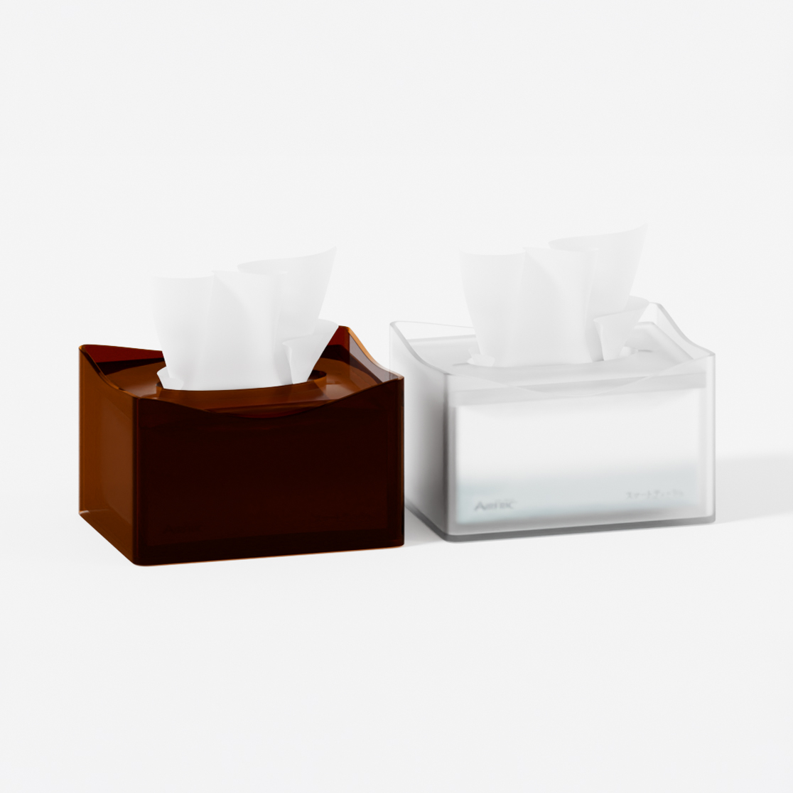

ホーム＆キッチン › 収納用品 › ティッシュケース



AIRFRIC スマートティッシュケース ハーフサイズ対応 アクリル 8mm厚の蓋 浮かない 引っかからない 詰め替えかんたん コーヒー マットクリア
AIRFRIC のストアを表示
￥1,680
✓prime 無料配送
この商品について
- 8mmの厚みのアクリル蓋で、取っても浮かない
- コンパクト（136×106×80mm）で場所を取らない
- 4辺すべてにゆるやかなカーブ。どの方向からでも取れる
- 引っかからず破れにくい／蓋を開けて入れるだけの詰め替えかんたん設計
￥1,680
無料配送 土曜日
お届け先: 東京
お届け先: 東京
在庫あり
商品の情報
| ブランド | AIRFRIC |
|---|---|
| 品名 | ティッシュケース |
| カラー | コーヒー／マットクリア |
| サイズ | 約 幅136×奥行106×高さ80mm |
| 重量 | 本体159g＋蓋73g |
| 素材 | アクリル |
| 対応ティッシュ | スマートティッシュ／Kinugokochi（ハーフサイズ） |
| お手入れ | 柔らかい布で水またはぬるま湯で拭いてください。アルコールや研磨剤入りの洗剤は使用しないでください。 |